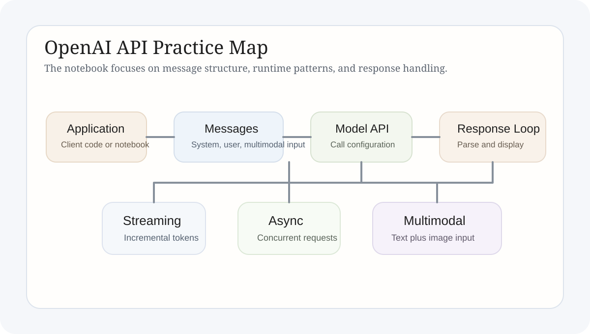

OpenAI API Learning Notes
This article places message structure, streaming, asynchronous requests, multi-turn interaction, and multimodal input inside one interface perspective, and explains why the API layer directly shapes application quality.
Technical Explainer
The object of this note set is not “sending a prompt.” It is turning model capability into a controllable interface. Once work enters the API layer, message design, response handling, streaming, asynchronous concurrency, and state management all become real engineering questions.
1. Theme
The real object of API study is the interface layer that carries model capability into an application. A model may generate text, process multimodal input, or support multi-turn dialogue, but those abilities only become usable features when the request structure and response handling are made explicit.
This is why the API should not be treated as a thin gateway. It is the control surface of the model system. How message history is organized, how streaming is presented, how asynchronous calls are scheduled, and how failures are handled all shape the user experience and the maintenance cost of the application.

2. Principle
The interface layer can be compressed into three objects. The first is the input object: messages, system constraints, user content, and multimodal payloads. The second is the runtime object: model configuration, streaming mode, async concurrency, and conversation state. The third is the output object: how results are parsed, displayed, cached, or fed into later logic.
If these three objects are not designed clearly, the application becomes fragile. A single-turn demo may still run, but once real interaction begins, history management, exception handling, and response pacing immediately become visible constraints. Interface design therefore matters as much as the model itself.
Input Design
Messages are not just concatenated text. They are the structured expression of roles, context, and payloads.
Runtime Mode
Streaming, asynchronous execution, and state handling determine whether the call behaves like a demo or a usable system.
Output Handling
Parsing and displaying results affects usability, debuggability, and the ability to recover from failure.
3. Practice and Implementation
The notebook breaks the interface problem into several small experiments. Basic-call sections clarify request structure and message organization. Multi-turn sections show why history must be maintained explicitly. Streaming sections focus on pacing and incremental display. Async sections test concurrent request scenarios. Multimodal sections extend the input beyond plain text into a more general payload design.
These experiments may look separate, but together they answer one question: the same model can produce very different product behavior under different interface organization. That is the real value of API study. It translates “what the model can do” into “how the application should call it.”
Message Structure
The same question can yield different results under different history layouts, which makes interface context a real control variable.
Streaming and Async
Perceived responsiveness and concurrency do not come from model magic. They come from client-side handling of the call lifecycle.
Multimodal Input
Once input expands beyond text, the importance of careful interface design becomes even more visible.
4. Current Output
This study already yields a fairly complete interface understanding. Request structure, message history, streaming output, concurrent calls, and multimodal input can all be isolated and tested directly. The model is no longer treated as a black-box answer machine, but as an engineered interface.
That matters for every later project. In RAG systems, agent workflows, and more general applications, user experience is often determined less by one model score and more by whether the call chain is stable, controllable, and extensible.
5. Conclusion
The API layer is the entry point through which model capability enters product reality. Once a system is built for actual use, message design, state management, and response handling stop being implementation details and become part of the system behavior itself.
6. Full Code Notes
Three content groups to inspect first in the notebook
Start with messages
The input structure controls what context the model actually sees and whether multi-turn behavior stays coherent.
Then inspect response modes
Streaming and async logic are not extras. They are part of interaction design and concurrency design.
End with state handling
If history is not managed explicitly, multi-turn interaction quickly loses continuity.
Code scope. The page renders the full `openai_apis.ipynb` notebook, including basic calls, multi-turn logic, streaming, async, and multimodal experiments.
GitHub Repository. https://github.com/YuEugenio/Agent-Studies